A. Operating system
 Start from the decision and the person who owns it.
Start from the decision and the person who owns it.B. Foundations
 Finding → Insight → Actionable insight
Finding → Insight → Actionable insightC. Audience
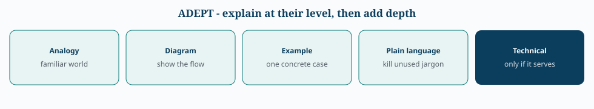
ADEPT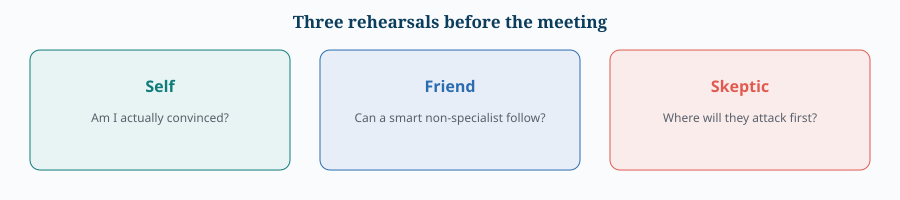
Self / Friend / SkepticD. Narrative
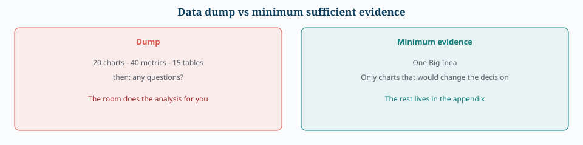
Data dump vs minimum sufficient evidenceE. Metrics
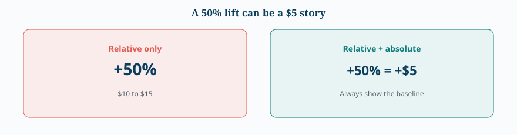
Show % with the baseline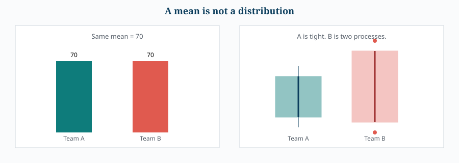
A mean is not a typical personF. Message-to-visual
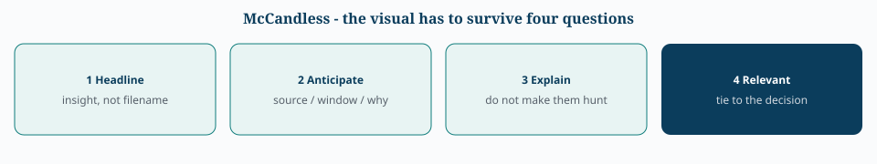
McCandless four questionsG. Format and delivery
 Presentation → Q&A → Report → Appendix → Notebook
Presentation → Q&A → Report → Appendix → Notebook 1-3-25
1-3-25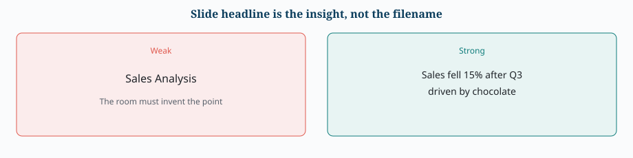
Insight headline, not filenameH. Rigor
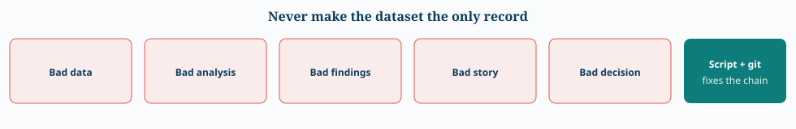
GIGO chain. Script + git is the brake.I. Applied cases (Part X)
Each figure is the Big Idea of that case, not a decoration.
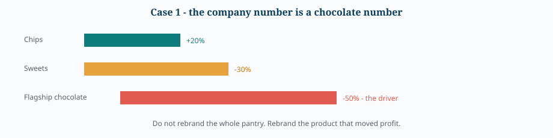
Case 1 chocolate driver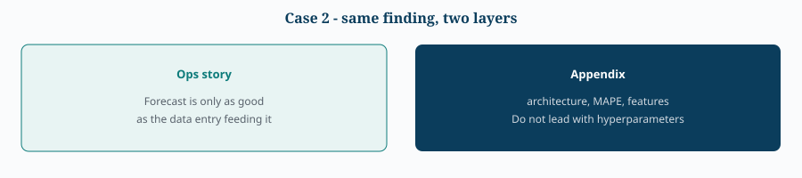
Case 2 two layers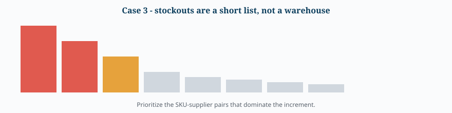
Case 3 concentration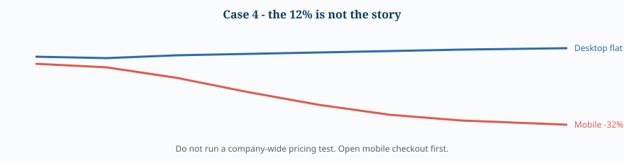
Case 4 mobile vs desktop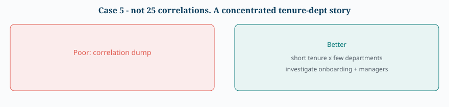
Case 5 not 25 correlations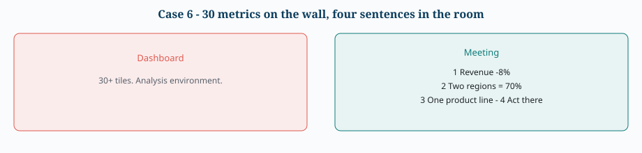
Case 6 four sentences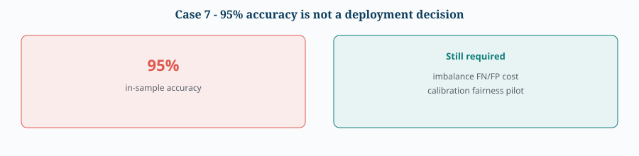
Case 7 accuracy ≠ deploy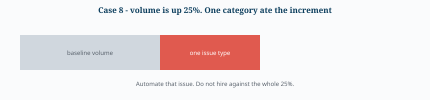
Case 8 one category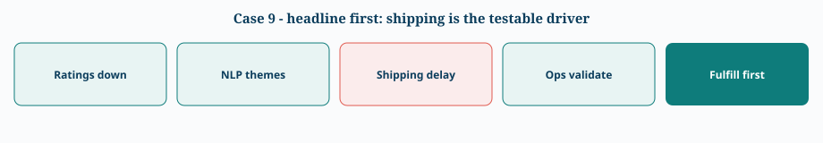
Case 9 fulfillment firstRelated